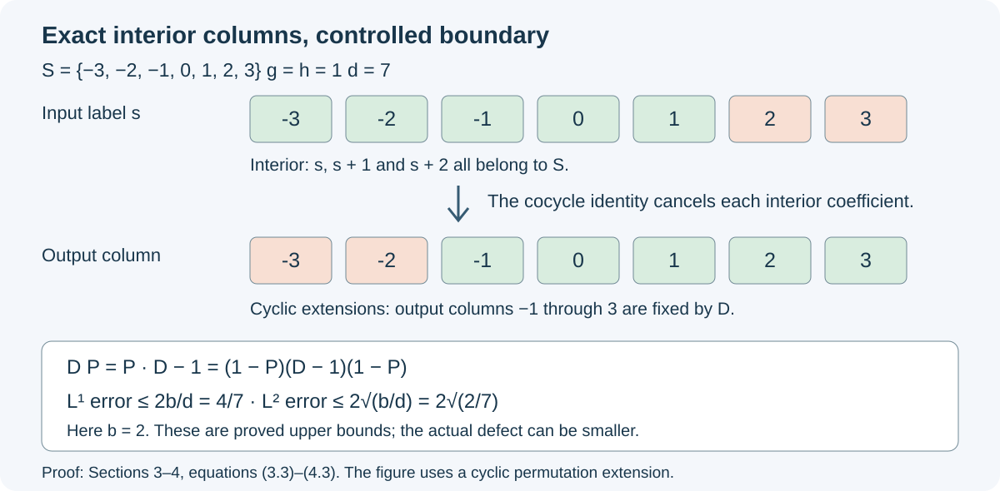

Finite matrix averaging and cohomology
A unitary cocycle can be corrected on a large finite portion of an amenable group by arranging its coefficients as a matrix permutation. The cocycle identity makes every interior column exact. Only a small boundary remains, and its size bounds the error for every tracial state. A coordinate selection then makes these corrections exact in a central sequence algebra.
The finite averaging theorem below allows arbitrary centers and nonseparable von Neumann algebras. The exact central-sequence theorem uses a factor with separable predual and a type-II central sequence algebra; it does not require freeness of the action. Its relative version retains a prescribed countable commutation family.
We use the bounded functional calculus, bicommutant, monotone-limit and polar-decomposition proofs, BK01–02 and BK04–07. The cocycle convention and perturbation calculation are QCA01 and QCA04:
\[ \begin{gathered} \alpha_g\alpha_h=\operatorname{Ad}(u(g,h))\alpha_{gh},\\ u(g,h)u(gh,k)=\alpha_g(u(h,k))u(g,hk),\\ \alpha_e=\operatorname{id},\qquad u(e,g)=u(g,e)=1. \end{gathered} \tag{0.1} \]All actions and inclusions of von Neumann algebras are normal and unital. In this lesson amenability means the finite Følner condition: for every finite \(K\subset G\) and \(\eta>0\), there is a nonempty finite \(S\subset G\) such that \(|kS\triangle S|<\eta|S|\) for every \(k\in K\).
Matrix systems in finite type-II algebras
A finite von Neumann algebra is one in which \(v^*v=1\) implies \(vv^*=1\). Every corner \(pRp\) of a finite algebra is finite: extend an isometry in that corner by \(1-p\). A type-II algebra has no nonzero abelian projection; equivalently, every nonzero projection corner is noncommutative.
Lemma. A nonzero von Neumann algebra with no nonzero abelian projection contains a full matrix system \((E_{ij})_{1\le i,j\le d}\) for every positive integer \(d\). If the algebra is finite, any two full systems of the same size are unitarily conjugate.
Proof of existence. In a noncommutative projection corner \(pRp\), some two projections \(a,b\) fail to commute. Otherwise finite spectral approximations would make every pair of selfadjoint elements commute, and hence make the whole corner commutative. The operator \(x=(p-a)ba\) is nonzero: if it and its adjoint vanished, then \(ba=aba=ab\). Its polar partial isometry has nonzero orthogonal initial and final projections below \(p\). Thus every nonzero corner contains two nonzero orthogonal equivalent subprojections.
Inductively it contains \(d\) such equivalent pieces. To increase a tuple \(q_1,\ldots,q_j\), split two nonzero equivalent orthogonal pieces \(r,s\) from \(q_1\), transport \(r\) into every \(q_i\) by the equivalences, and adjoin \(s\). This gives \(j+1\) orthogonal pieces equivalent to \(r\).
Choose a maximal family of disjoint \(d\)-tuples by Zorn's lemma, retaining for each tuple partial isometries from its first projection to each of its projections. Chain unions are upper bounds. The sum of all tuple projections must be \(1\), since any nonzero remaining corner would contain another tuple. Sums here are strong limits over finite subsets, with no countability assumption. To justify the sums, for an orthogonal family \((p_a)\) and a fixed vector \(\xi\), the finite sums of \(\|p_a\xi\|^2\) are bounded by \(\|\xi\|^2\). Their tails tend to zero. For partial isometries with disjoint initial and disjoint final supports, this argument applies both to the partial sums and their adjoints. They therefore have bounded strong* limits in the algebra. Multiplication of bounded strongly convergent nets preserves their products, by
\[ \|(A_iB_i-AB)\xi\| \le \|A_i\|\,\|(B_i-B)\xi\|+\|(A_i-A)B\xi\|. \tag{1.1} \]Summing the first, second, and subsequent entries of the tuples gives equivalent orthogonal projections \(p_1,\ldots,p_d\) summing to \(1\). Sum the corresponding bridges to get \(v_i^*v_i=p_1\), \(v_iv_i^*=p_i\), and \(v_1=p_1\). Then \(E_{ij}=v_iv_j^*\) satisfies
\[ E_{ij}E_{kl}=\delta_{jk}E_{il},\qquad E_{ij}^*=E_{ji},\qquad \sum_iE_{ii}=1. \tag{1.2} \]Every \(p_i\) is nonzero, since all are equivalent and their sum is nonzero.
Proof of conjugacy. Let \(E\) and \(F\) be two full \(d\)-by-\(d\) systems in a finite algebra \(R\). Set \(p=E_{11}\), \(q=F_{11}\). Choose a maximal orthogonal family of partial isometries with initial projections below \(p\) and final projections below \(q\). The same net argument gives their sum \(w\), with \(w^*w\le p\), \(ww^*\le q\). Write
\[ p_0=p-w^*w,\qquad q_0=q-ww^*. \tag{1.3} \]Maximality and polar decomposition imply \(p_0Rq_0=0\); otherwise the polar decomposition of a nonzero element of this corner would add an orthogonal bridge.
The central supports of \(p_0,q_0\) are disjoint. Indeed, the central support \(c(a)\) of a projection \(a\) is the projection onto \(\overline{RaH}\) in a faithful concrete representation. This projection commutes with \(R\), because that subspace reduces \(R\), and belongs to \(R\), because the subspace also reduces \(R'\) and the bicommutant theorem applies. It is therefore central, dominates \(a\), and is below every central projection dominating \(a\). The equality \(p_0Rq_0=0\) makes \(\overline{Rp_0H}\) and \(\overline{Rq_0H}\) orthogonal.
Put \(z=c(p_0)\), so \(zq_0=0\). The operator
\[ V=\sum_{i=1}^d zE_{i1}w^*F_{1i} \tag{1.4} \]satisfies
\[ V^*V=z,\qquad VV^*=\sum_i zE_{i1}w^*wE_{1i}\le z-p_0. \tag{1.5} \]For the first identity use \(zww^*=zq\) and the \(F\)-matrix products; for the second use the \(E\)-products. The missing projection in the \(i=1\) diagonal is \(p_0\), and all other missing diagonal projections are positive. If \(p_0\ne0\), (1.5) is a proper isometry in \(zR\), contradicting finiteness. Thus \(p_0=0\). Interchange \(E,F\) and replace \(w\) by \(w^*\) to obtain \(q_0=0\).
Now
\[ v=\sum_i F_{i1}wE_{1i} \tag{1.6} \]is unitary and \(vE_{ij}v^*=F_{ij}\). Both claims follow by multiplying the finite sums and using \(w^*w=p\), \(ww^*=q\). This proof uses no scalar trace, center-valued trace, or separability assumption. \(\square\)
Fixing a finite matrix block
Let \((\alpha,u)\) be a normalized cocycle action of \(G\) on a nonzero finite type-II algebra \(R\). Fix a full matrix system \(E\) of size \(d\). By Section 1 choose \(q_g\in\mathcal U(R)\) with
\[ q_g\alpha_g(E_{ij})q_g^*=E_{ij},\qquad q_e=1. \tag{2.1} \]Set
\[ \begin{aligned} \beta_g&=\operatorname{Ad}(q_g)\alpha_g,\\ c(g,h)&=q_g\alpha_g(q_h)u(g,h)q_{gh}^*,\\ A&=\{E_{ij}:1\le i,j\le d\}'\cap R. \end{aligned} \tag{2.2} \]Proposition. The maps \(\beta_g\) fix every matrix unit, preserve \(A\), and the normalized cocycle \(c(g,h)\) lies in \(A\). Each element of \(R\) has a unique finite expansion
\[ x=\sum_{i,j}a_{ij}E_{ij},\qquad a_{ij}=\sum_{k=1}^d E_{ki}xE_{jk}\in A. \tag{2.3} \]Thus \(\beta_g\) acts only on the coefficients in this expansion.
Proof. The perturbation calculation QCA04 proves the cocycle identities for \((\beta,c)\). Equation (2.1) implies that \(\beta_g\) and its inverse preserve the matrix commutant. Since both \(\beta_g\beta_h\) and \(\beta_{gh}\) fix every \(E_{ij}\), the identity \(\beta_g\beta_h=\operatorname{Ad}(c(g,h))\beta_{gh}\) implies that \(c(g,h)\) commutes with every \(E_{ij}\).
For (2.3), left and right multiplication of \(a_{ij}\) by \(E_{ab}\) both give \(E_{ai}xE_{jb}\). Hence \(a_{ij}\in A\). Multiplying out \(\sum a_{ij}E_{ij}\) gives \(\sum E_{ii}xE_{jj}=x\). If \(\sum a_{ij}E_{ij}=0\), multiply on the left by \(E_{1i}\) and on the right by \(E_{j1}\) to obtain \(a_{ij}E_{11}=0\). Commutation with all matrix units gives \(a_{ij}E_{kk}=0\) for every \(k\), and hence \(a_{ij}=0\). The last assertion follows from \(\beta_g(E_{ij})=E_{ij}\). \(\square\)
The matrix notation below abbreviates this finite expansion. It does not require an infinite tensor-product identification.
Finite translations and their correcting unitaries
Fix a nonempty finite set \(S\subset G\), and use a full matrix system indexed by \(S\). For every \(g\in G\), extend the partial injection
\[ s\longmapsto gs\quad(s\in S,\ gs\in S) \]to a permutation \(\ell_g:S\to S\). Such an extension exists because the unused domain and range have equal finite cardinality. Take \(\ell_e=\operatorname{id}\). No homomorphism property of \(g\mapsto\ell_g\) is required.
In the coordinates of Section 2 define
\[ w_g=\sum_{s\in S}c(g,s)^*E_{\ell_g(s),s}. \tag{3.1} \]Proposition. Each \(w_g\) is unitary, \(w_e=1\), and the defect
\[ D(g,h)=w_g\beta_g(w_h)c(g,h)w_{gh}^* \tag{3.2} \]has the expansion
\[ \begin{aligned} D(g,h)=\sum_{s\in S} &c(g,\ell_h(s))^*\beta_g(c(h,s)^*)\\ &{}\cdot c(g,h)c(gh,s) E_{\ell_g\ell_h(s),\,\ell_{gh}(s)}. \end{aligned} \tag{3.3} \]For
\[ S_{g,h}=\{s\in S:hs\in S,\ ghs\in S\}, \tag{3.4} \]the corresponding terms in (3.3) are exactly \(E_{ghs,ghs}\).
Proof. In \(w_g^*w_g\), distinct columns have distinct images under \(\ell_g\), so the mixed products vanish and each diagonal coefficient is \(1\). This gives \(\sum_sE_{ss}=1\). In \(w_gw_g^*\) the same calculation gives \(\sum_sE_{\ell_g(s),\ell_g(s)}=1\). Normalization gives \(w_e=1\).
For (3.3), first multiply the sums for \(w_g\) and \(\beta_g(w_h)\). The latter has unchanged matrix entries. The matrix product forces the first column index to be \(\ell_h(s)\). Multiplication by the matrix expansion of \(w_{gh}^*\) then forces its index to be \(s\), giving exactly the ordered coefficient in (3.3).
If \(s\in S_{g,h}\), the three permutations agree with the actual translations at the required arguments:
\[ \ell_h(s)=hs,\quad \ell_g(\ell_h(s))=ghs,\quad \ell_{gh}(s)=ghs. \tag{3.5} \]The cocycle identity says
\[ c(g,h)c(gh,s)=\beta_g(c(h,s))c(g,hs). \]In (3.3), this cancels successively with \(\beta_g(c(h,s)^*)\) and with \(c(g,hs)^*\). The coefficient is therefore \(1\), in the stated order. \(\square\)
Uniform trace bounds and finite approximation
Let \(d=|S|\), let \(b=|S\setminus S_{g,h}|\), and put
\[ P_{g,h}=\sum_{s\in S_{g,h}}E_{ghs,ghs}. \tag{4.1} \]Theorem. For every tracial state \(\tau\) on \(R\),
\[ \begin{gathered} \|D(g,h)-1\|_{1,\tau}\le \frac{2b}{d},\\ \|D(g,h)-1\|_{2,\tau}\le 2\sqrt{\frac bd}, \end{gathered} \tag{4.2} \]where \(\|x\|_{1,\tau}=\tau(|x|)\) and \(\|x\|_{2,\tau}=\tau(x^*x)^{1/2}\). The same \(w_g\) works for all tracial states, whether or not they are faithful or normal.
Proof. The right matrix indices in (3.3) are all distinct, since \(\ell_{gh}\) is a permutation. Section 3 therefore gives \(D(g,h)P_{g,h}=P_{g,h}\). As \(D(g,h)\) is unitary, multiplication by its adjoint gives \(D(g,h)^*P_{g,h}=P_{g,h}\); taking adjoints gives \(P_{g,h}D(g,h)=P_{g,h}\). Consequently
\[ \begin{gathered} D(g,h)-1=(1-P_{g,h})(D(g,h)-1)(1-P_{g,h}),\\ |D(g,h)-1|\le2(1-P_{g,h}),\\ (D(g,h)-1)^*(D(g,h)-1)\le4(1-P_{g,h}). \end{gathered} \tag{4.3} \]The positive inequalities follow from the norm bound \(2\) on the complementary corner and bounded functional calculus. Traciality gives \(\tau(E_{ss})=\tau(E_{st}E_{ts})=\tau(E_{ts}E_{st})=\tau(E_{tt})\). Their sum is \(1\), so every value is \(1/d\). Thus \(\tau(1-P_{g,h})=b/d\), proving (4.2). \(\square\)
Finite approximation. Let \(F\subset G\) be finite and \(\varepsilon>0\). There are normalized unitaries \(t_g\in R\), for all \(g\in G\), such that
\[ \|t_g\alpha_g(t_h)u(g,h)t_{gh}^*-1\|_{1,\tau} <\varepsilon\quad(g,h\in F) \tag{4.4} \]simultaneously for every tracial state \(\tau\).
To prove this, include \(e\) in \(F\), put \(K=F\cup F^2\), and choose \(0<\delta<\varepsilon/2\). Apply the Følner condition with tolerance \(\delta/|K|\). A union bound gives
\[ \left|S\setminus\bigcap_{k\in K}k^{-1}S\right| <\delta|S|, \tag{4.5} \]because \(|S\setminus k^{-1}S|=|kS\setminus S|\le|kS\triangle S|\). Thus \(b<\delta d\) for every \(g,h\in F\). Set \(t_g=w_gq_g\). A direct substitution of (2.2) gives
\[ t_g\alpha_g(t_h)u(g,h)t_{gh}^* =w_g\beta_g(w_h)c(g,h)w_{gh}^*=D(g,h). \]Equation (4.2) proves (4.4). This also proves the corresponding \(L^2\) bound \(2\sqrt{\delta}\).
If \(G\) is finite, take \(S=G\) and \(\ell_g(s)=gs\). There is no boundary, and the same construction gives \(t_g\alpha_g(t_h)u(g,h)t_{gh}^*=1\) for every pair. This is exact second-cohomology vanishing for a finite group on every finite type-II algebra.

For \(S=\{-3,\ldots,3\}\subset\mathbb Z\) and \(g=h=1\), the five interior input labels \(-3,\ldots,1\) give exact output columns \(-1,\ldots,3\). With cyclic permutation extensions, only the two remaining output columns can carry an error. The bounds in (4.2) are \(4/7\) and \(2\sqrt{2/7}\); they are upper bounds, not asserted error values.
Semiliftable maps retain the centralizing conditions
From now on, \(M\) is a nonzero factor with separable predual, \(\phi\) is a faithful normal state, and \(\omega\) is a free ultrafilter on \(\mathbb N\). Use the centralizing quotient from CFR01:
\[ \begin{aligned} \mathcal C_\omega(M) &=\{(x_k)\in\ell^\infty(M): \|[x_k,\psi]\|\to_\omega0\ \text{for every }\psi\in M_*\},\\ \mathcal J_\omega &=\{(x_k)\in\mathcal C_\omega(M): \|x_k\|_{\phi,\#}\to_\omega0\},\\ \mathcal F=M_\omega &=\mathcal C_\omega(M)/\mathcal J_\omega,\qquad \|x\|_{\phi,\#}^2=\phi(x^*x)+\phi(xx^*). \end{aligned} \tag{5.1} \]Here \((x\psi)(a)=\psi(ax)\) and \((\psi x)(a)=\psi(xa)\). The earlier quotient theorem proves that \(\mathcal F\) is a finite von Neumann algebra with faithful normal trace
\[ \tau(\pi_\omega(x_k))=\lim_{k\to\omega}\phi(x_k). \tag{5.2} \]It also proves that every centralizing bounded sequence has a scalar ultraweak ultralimit. The underlying complete programme proofs are the quotient construction and trace theorem. The exact unitary lifts used below are Theorem 5.1 at endpoints \(1,1\). No general unitary-lifting assertion for arbitrary \(C^*\)-quotients is used.
Let \(\gamma_k,\sigma\in\operatorname{Aut}(M)\), with
\[ \|\psi\circ\gamma_k-\psi\circ\sigma\|\longrightarrow_\omega0 \qquad(\psi\in M_*). \tag{5.3} \]This is convergence in the \(u\)-topology along \(\omega\); an ordinary \(u\)-convergent sequence is included.
Lemma. Coordinate application induces a normal trace-preserving automorphism
\[ \widehat\gamma(\pi_\omega(x_k)) =\pi_\omega(\gamma_k(x_k)) \tag{5.4} \]of \(\mathcal F\). We call such an automorphism semiliftable.
Proof. For \(\sup_k\|x_k\|\le C\), the functional commutator identity gives
\[ \begin{aligned} \|[\gamma_k(x_k),\psi]\| &=\|[x_k,\psi\circ\gamma_k]\|\\ &\le\|[x_k,\psi\circ\sigma]\| +2C\|\psi\circ\gamma_k-\psi\circ\sigma\|. \end{aligned} \tag{5.5} \]Thus centralizing sequences remain centralizing. If \(x_k\to_\omega0\) strongly*, then
\[ \begin{aligned} \phi(\gamma_k(x_k^*x_k)) &\le(\phi\circ\sigma)(x_k^*x_k) +C^2\|\phi\circ\gamma_k-\phi\circ\sigma\|,\\ \phi(\gamma_k(x_kx_k^*)) &\le(\phi\circ\sigma)(x_kx_k^*) +C^2\|\phi\circ\gamma_k-\phi\circ\sigma\|. \end{aligned} \tag{5.6} \]Both right sides tend to zero. We use here CDS02's faithful-state control of bounded strong* convergence: a bounded sequence tending to zero in \(\phi\)-sharp norm also tends to zero for each fixed normal positive functional. Equations (5.5)–(5.6) show that (5.4) is a well-defined *-homomorphism.
The inverse coordinate maps have the same convergence property. To see this without assuming continuity of inversion, let \(T_k\psi=\psi\circ\gamma_k\) and \(T\psi=\psi\circ\sigma\). They are invertible isometries of \(M_*\), and
\[ \|T_k^{-1}\psi-T^{-1}\psi\| =\|\psi-T_kT^{-1}\psi\|\longrightarrow_\omega0. \tag{5.7} \]Applying the previous argument to the inverses proves that (5.4) is an automorphism.
If \(X=\pi_\omega(x_k)\), scalar ultraweak convergence and (5.3) give
\[ \begin{aligned} \tau(\widehat\gamma(X)) &=\lim_\omega\phi(\gamma_k(x_k))\\ &=\lim_\omega(\phi\circ\sigma)(x_k) =\tau(X). \end{aligned} \tag{5.8} \]Finally an increasing bounded positive net \(X_i\uparrow X\) has \(Y=\sup_i\widehat\gamma(X_i)\le\widehat\gamma(X)\). Normality of \(\tau\) and (5.8) give \(\tau(\widehat\gamma(X)-Y)=\tau(X)-\sup_i\tau(X_i)=0\). Faithfulness forces equality. Hence \(\widehat\gamma\) is normal; the same argument applies to its inverse. \(\square\)
In particular, this construction applies when \(\gamma_k=\operatorname{Ad}(a_k)\beta\) converges in the \(u\)-topology to an automorphism of \(M\), for a fixed \(\beta\) and a sequence of unitaries \(a_k\). There is no assertion that arbitrary moving inner implementers preserve centralizing sequences without (5.3).
Exact second cohomology by a finite-test diagonal
Theorem. Suppose \(\mathcal F=M_\omega\) is of type II. Let \(G\) be countable and amenable, and let \((\alpha,u)\) be a normalized cocycle action on \(\mathcal F\). Suppose each \(\alpha_g\) has a semilift \((\gamma_{g,k})_k\) as in Section 5. Then there are unitaries \(v_g\in\mathcal F\), with \(v_e=1\), satisfying
\[ v_g\alpha_g(v_h)u(g,h)v_{gh}^*=1 \qquad(g,h\in G). \tag{6.1} \]The action need not be free.
Proof. Choose increasing finite sets \(F_n\subset G\), containing \(e\), whose union is \(G\). Apply Section 4 to the finite type-II algebra \(\mathcal F\) and its trace. For every \(n\ge1\), choose a normalized family \(v_g^{(n)}\in\mathcal U(\mathcal F)\) such that, with
\[ d_n(g,h)=v_g^{(n)}\alpha_g(v_h^{(n)})u(g,h)v_{gh}^{(n)*}-1, \]one has
\[ \|d_n(g,h)\|_{1,\tau}<16^{-n} \qquad(g,h\in F_n). \tag{6.2} \]Since \(d_n(g,h)\) is a unitary minus \(1\), its norm is at most \(2\), and functional calculus gives \(|d_n|^2\le2|d_n|\). Thus
\[ 2\|d_n(g,h)\|_{2,\tau}^2<4\cdot16^{-n}. \tag{6.3} \]Choose exact centralizing unitary representatives \(v_g^{(n)}(k)\) of every \(v_g^{(n)}\), and exact centralizing unitary representatives \(u(g,h;k)\) of every \(u(g,h)\), using the lifting theorem specified in Section 5. Choose the identity representatives at the normalized entries. These are countably many choices. The representatives of the prescribed \(u(g,h)\) will remain fixed.
For a fixed row \(n\), put
\[ \begin{aligned} d_n(g,h;k)={}&v_g^{(n)}(k)\, \gamma_{g,k}(v_h^{(n)}(k))\\ &{}\cdot u(g,h;k)\,v_{gh}^{(n)}(k)^*-1. \end{aligned} \tag{6.4} \]By Section 5 and the *-algebra property of \(\mathcal C_\omega(M)\), this sequence represents \(d_n(g,h)\). Formula (5.2), applied to both squares, yields
\[ \lim_{k\to\omega}\|d_n(g,h;k)\|_{\phi,\#}^2 =2\|d_n(g,h)\|_{2,\tau}^2 <4\cdot16^{-n}. \tag{6.5} \]The square root of the rightmost bound is \(2^{1-2n}\le2^{-n}\).
Choose a countable norm-dense family \((\psi_j)\) in \(M_*\). For each \(n\), the following are finitely many tests that hold on a set belonging to \(\omega\):
\[ \begin{aligned} \|[v_g^{(n)}(k),\psi_j]\|&<2^{-n} &&(g\in F_n\cup F_n^2,\ j\le n),\\ \|d_n(g,h;k)\|_{\phi,\#}&<2^{-n} &&(g,h\in F_n). \end{aligned} \tag{6.6} \]For the first line use centralizing of each fixed row; for the second use the strict inequality in (6.5). Intersect these finite sets with the preceding set and with \(\{k:k\ge n\}\). This gives decreasing sets
\[ A_n\in\omega,\qquad A_n\subset A_{n-1},\qquad A_n\subset\{k:k\ge n\}. \tag{6.7} \]Set \(A_0=\mathbb N\), and define
\[ \begin{gathered} r(k)=\max\{0\le n\le k:k\in A_n\},\\ v_g(k)= \begin{cases} v_g^{(r(k))}(k),&r(k)>0,\\ 1,&r(k)=0. \end{cases} \end{gathered} \tag{6.8} \]For each fixed \(n\), the set \(A_n\) is contained in \(\{k:r(k)\ge n\}\); hence \(r(k)\to_\omega\infty\). No countable intersection of sets in \(\omega\) is taken.
Every \(v_g(k)\) is unitary. For fixed \(g,j\), once \(r(k)\) is large enough to include \(g\) and \(\psi_j\), the first line of (6.6) bounds its commutator by \(2^{-r(k)}\). For arbitrary \(\psi\), use
\[ \|[v_g(k),\psi]\| \le\|[v_g(k),\psi_j]\|+2\|\psi-\psi_j\|. \tag{6.9} \]First take the ultralimit and then improve the norm approximation. Thus the diagonal sequence is centralizing and defines \(v_g\in\mathcal U(\mathcal F)\); moreover \(v_e=1\).
For fixed \(g,h\), the coordinate expression for the left side of (6.1) minus \(1\) is exactly
\[ d_{r(k)}(g,h;k) \]on the set where \(r(k)>0\). In this equality both \(\gamma_{g,k}\) and \(u(g,h;k)\) retain coordinate \(k\). For sufficiently large \(r(k)\), the second line of (6.6) bounds the sharp norm by \(2^{-r(k)}\), so it tends to zero along \(\omega\). The expression is centralizing by Section 5, now applied to the diagonal sequences. It belongs to \(\mathcal J_\omega\), and (6.1) follows in the quotient. \(\square\)
The rows \(v_g^{(n)}\) need not be Cauchy, and no convergence of those rows in \(\mathcal F\) was asserted. The proof selects their coordinates using the actual finite tests.
Relative corrections and the quotient reconstruction
Let \(\mathcal S=\{X_1,X_2,\ldots\}\subset\mathcal F\) be countable and closed under adjoints, and put
\[ B=\mathcal S'\cap\mathcal F. \tag{7.1} \]Suppose \(B\) is of type II and \((\alpha,u)\) is a normalized cocycle action on \(B\). Assume each \(\alpha_g\) is the restriction of a semiliftable automorphism of the full \(\mathcal F\), and use that extension for its coordinate formula. The extensions need not satisfy the cocycle-action equations outside \(B\).
Relative theorem. The correcting unitaries in (6.1) can all be chosen in \(B\).
Proof. The restriction of \(\tau\) makes \(B\) a finite type-II algebra with faithful normal trace. Obtain the approximate rows \(v_g^{(n)}\) inside \(B\) by Section 4. Choose fixed bounded centralizing representatives \(X_j(k)\). Since every row commutes with every \(X_j\) in the quotient, its representative commutators tend to zero in sharp norm along \(\omega\). Add the finite tests
\[ \|[v_g^{(n)}(k),X_j(k)]\|_{\phi,\#}<2^{-n} \quad(g\in F_n\cup F_n^2,\ j\le n) \tag{7.2} \]when choosing \(A_n\). The rest of the construction is unchanged. For each fixed \(g,j\), (7.2) makes the diagonal commutator sharp-null, so \(v_gX_j=X_jv_g\) in \(\mathcal F\). This proves \(v_g\in B\). \(\square\)
When \(M\cong M\overline\otimes R_{\mathrm{hyp}}\), where \(R_{\mathrm{hyp}}\) is the tracial hyperfinite factor, CFR06 proves that every nonzero corner of such a countable relative commutant contains full \(2\)-by-\(2\) matrix units. Consequently it has no abelian projection and is of type II. This supplies the type hypothesis here, including the case \(\mathcal S=\{1\}\), without asserting that \(\mathcal F\) or \(B\) is a factor.
We next verify the amenability passage needed for quotient groups. Suppose \(G\) satisfies the finite Følner condition and \(\rho:G\to P\) is onto. For a finite \(K\subset P\), choose one lift \(\widetilde k\) of each \(k\in K\). A Følner set \(S\subset G\) makes
\[ f=|S|^{-1}\mathbf1_S,\qquad a(p)=\sum_{\rho(g)=p}f(g) \tag{7.3} \]a finitely supported probability with
\[ \sum_{k\in K}\|k\cdot a-a\|_{\ell^1(P)} \le \sum_{k\in K}\|\widetilde k\cdot f-f\|_{\ell^1(G)} <\eta \tag{7.4} \]for any prescribed \(\eta>0\). The inequality follows by taking the absolute value after, instead of before, each fiber sum.
List the distinct positive values of \(a\) as \(0<t_1<\cdots<t_m\), set \(t_0=0\), and put \(T_j=\{p:a(p)\ge t_j\}\). Finite layer sums give
\[ \begin{gathered} 1=\sum_j(t_j-t_{j-1})|T_j|,\\ \|k\cdot a-a\|_1 =\sum_j(t_j-t_{j-1})|kT_j\triangle T_j|. \end{gathered} \tag{7.5} \]The second identity follows pointwise by telescoping between the two values of \(a\). If every nonempty \(T_j\) had \(\sum_{k\in K}|kT_j\triangle T_j|\ge\eta|T_j|\), (7.5) would contradict (7.4). Some \(T_j\) therefore satisfies the Følner inequalities for every \(k\in K\). Thus \(P\) is amenable.
Application to reconstruction. In the subalgebra version of QCA06, suppose the quotient cocycle \((\varphi,z)\) acts on \(\mathcal F\), or on a relative algebra \(B\) as above, and the \(\varphi_p\) have the required semilifts on \(\mathcal F\). If the relevant algebra is of type II and the quotient group is countable amenable, the theorem supplies
\[ a_p\varphi_p(a_q)z(p,q)a_{pq}^*=1. \tag{7.6} \]QCA07 then reconstructs all original group coefficients, with the subgroup cocycle retained. Membership of \(z\) in the designated central sequence algebra and equality of the mixed coefficients remain explicit hypotheses from QCA06; commutation with the original algebra alone does not establish them. The subsequent passage from an ambient sequence-algebra comparison to unitaries in the original factor still requires the intertwining proof.
Why the type-II hypothesis matters
The averaging theorem cannot be extended to every finite algebra. Let \(R=\mathbb C\), let \(G=(\mathbb Z/2\mathbb Z)^2\), and let \(\alpha_g=\operatorname{id}\). Write \(g=(a,b)\), \(h=(c,d)\), and define
\[ u(g,h)=(-1)^{bc}. \tag{8.1} \]This is a normalized scalar cocycle. For \(k=(e,f)\), the exponents on the two sides of the cocycle equation are
\[ bc+(b+d)e,\qquad de+b(c+e), \]which are equal modulo two.
Take \(x=(1,0)\) and \(y=(0,1)\). Then
\[ u(x,y)=1,\qquad u(y,x)=-1,\qquad x+y=y+x. \tag{8.2} \]For any scalar unitary cochain \(t_g\), the two corrected coefficients are \(z\) and \(-z\), where \(z=t_xt_yt_{x+y}^*\). Since \(|z|=1\),
\[ |z-1|^2+|-z-1|^2=4. \tag{8.3} \]At least one of these errors is at least \(\sqrt2\). Thus there is not even a family making all cocycle errors arbitrarily small on \(\{x,y\}^2\). This proves the necessity of a substantive algebra hypothesis; finiteness alone does not supply the full matrix blocks used in Section 1.
Further reading. T. Masuda, Unified approach to classification of actions of discrete amenable groups on injective factors, free author preprint, arXiv:1006.1176, Appendix A, Lemma A.1 and the proof of Proposition 4.5, pp.24–25. A. Ocneanu, Actions of discrete amenable groups on factors, free Warwick doctoral thesis, Section 5.2, printed pp.50–51, for semiliftable automorphisms, and Section 5.5 for index selection. The finite averaging and diagonal proofs needed here are written above; the quotient and lifting foundations are the earlier programme proofs identified in Section 5.
Provenance. Original exposition and proofs by OpenAI GPT-6 Astra at Ultra reasoning effort. The original prose and editable figure are dedicated under CC0.